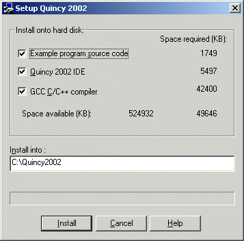
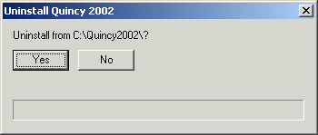

Installing and Uninstalling Quincy
Installing
- Put the CD-ROM in your CD-ROM drive.
If you have Autorun enabled on your Windows PC, the Setup program launches automatically. If Autorun is not enabled:
- Choose the Run command on the Windows Start menu.
- Enter E:\setup in the Open text field. (Substitute your CD-ROM drive letter for E.)
- Click OK.
Here is the Setup program running.

(The Help button opens this User's Guide document in your browser.)
Check the options to specify which files you want to install. Here are your choices:
Example Program Source Code
- You can install the source code to your hard drive, in which case, you can compile and run the programs. This option requires more hard drive space, and the hard disk space requirements go up as you compile programs into object and executable files.
- You can choose to leave the example source code on the CD-ROM, in which case you can load and read the examples, but you cannot modify or compile them because you cannot write to the CD-ROM. To experiment with an example, you must manually move its source code to the hard drive and work with it from there.
Quincy IDE
- You can install the Quincy IDE to your hard drive, which allows you to run Quincy with or without loading the CD-ROM and at the speed of the hard drive.
- You can choose to leave Quincy on the CD-ROM, which means that to run Quincy, you must load the CD-ROM in the CD-ROM drive from which you installed. This option saves hard drive space but costs more in processing time whenever you load Quincy into memory to run it.
GCC C/C++ Compiler
- You can install the GCC C/C++ compiler suite to your hard drive, which allows you to compile programs from within Quincy with or without loading the CD-ROM and at the speed of the hard drive.
- You can choose to leave the compiler programs on the CD-ROM, which means that to compile programs, you must load the CD-ROM in the CD-ROM drive from which you installed. This option saves hard drive space but costs more in processing time whenever you compile programs from within Quincy.
The Setup program calculates the hard drive space required to copy the selected files and compares the required space to the space available. If not enough space is available, Setup reports that problem and does not continue.
Click Install when you are ready. The progress bar just above the command buttons indicates the Setup program's progress as it copies files.
Uninstalling
To uninstall Quincy:
- Open the Quincy submenu on the Start/Programs menu.
- Click the Uninstall command to run the Uninstall program shown here.

- Click Yes to uninstall Quincy, the compiler, and all installed example programs from your hard disk.
You can also uninstall Quincy from the Windows Control Panel's Add or Remove Programs applet.
<--previous page
next page-->